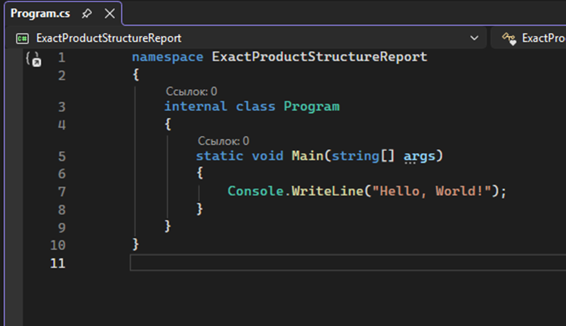
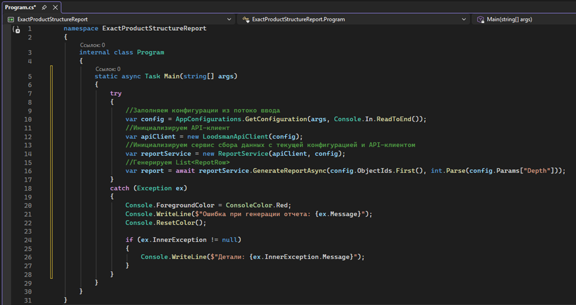
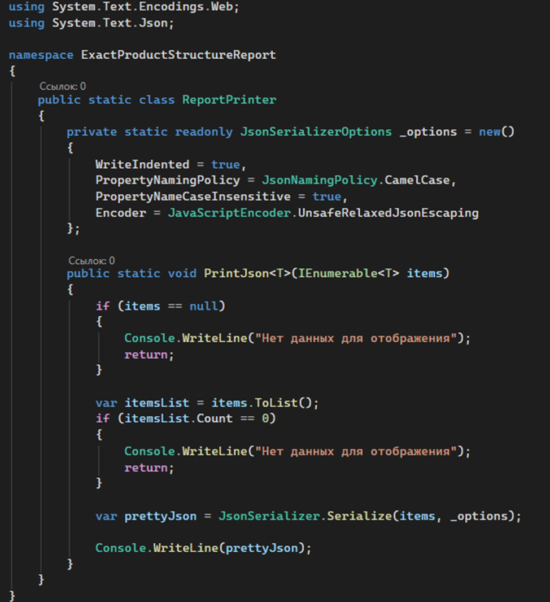
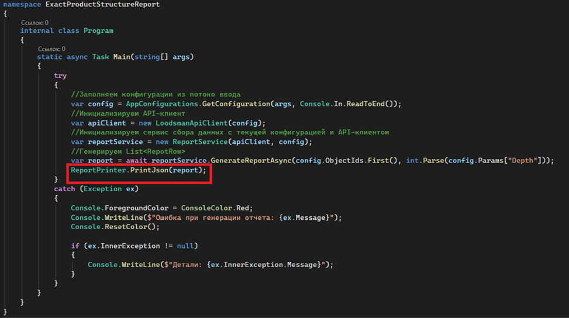

Основная программа. Сбор и возврат данных
На текущем этапе основная программа всё ещё выводит в консоль просто «Hello world!»:

Благодаря созданию абстракций над основными действиями на предыдущих этапах, логика основного приложения будет небольшой:

В текущем виде в переменной «report» уже содержатся все данные, необходимые для отчета. Осталось преобразовать их в JSON и отправить в поток вывода. Сделаем это в отдельном классе ReportPrinter:

Здесь используются опции сериализации объекта в JSON.
(https://learn.microsoft.com/ru-ru/dotnet/api/system.text.json.jsonserializeroptions?view=net-8.0)
Они необязательны, но без их использования JSON будет выведен просто в одну строку с экранированием кавычек.
Для внутренних сервисов это неважно, но при проверке правильности вывода человеку удобнее читать форматированный текст.
Финальный код класса «ReportPrinter»:
using System.Text.Encodings.Web;
using System.Text.Json;
namespace ExactProductStructureReport
{
public static class ReportPrinter
{
private static readonly JsonSerializerOptions _options = new()
{
WriteIndented = true,
PropertyNamingPolicy = JsonNamingPolicy.CamelCase,
PropertyNameCaseInsensitive = true,
Encoder = JavaScriptEncoder.UnsafeRelaxedJsonEscaping
};
public static void PrintJson<T>(IEnumerable<T> items)
{
if (items == null)
{
Console.WriteLine("Нет данных для отображения");
return;
}
var itemsList = items.ToList();
if (itemsList.Count == 0)
{
Console.WriteLine("Нет данных для отображения");
return;
}
var prettyJson = JsonSerializer.Serialize(items, _options);
Console.WriteLine(prettyJson);
}
}
}
В заключении добавим вызов метода вывода информации в основную программу:

Финальный код Program.cs:
namespace ExactProductStructureReport
{
internal class Program
{
static async Task Main(string[] args)
{
try
{
//Заполняем конфигурации из потоко ввода
var config = AppConfigurations.GetConfiguration(args, Console.In.ReadToEnd());
//Инициализируем API-клиент
var apiClient = new LoodsmanApiClient(config);
//Инициализируем сервис сбора данных с текущей конфигурацией и API-клиентом
var reportService = new ReportService(apiClient, config);
//Генерируем List<RepotRow>
var report = await reportService.GenerateReportAsync(config.ObjectIds.First(), int.Parse(config.Params["Depth"]));
ReportPrinter.PrintJson(report);
}
catch (Exception ex)
{
Console.ForegroundColor = ConsoleColor.Red;
Console.WriteLine($"Ошибка при генерации отчета: {ex.Message}");
Console.ResetColor();
if (ex.InnerException != null)
{
Console.WriteLine($"Детали: {ex.InnerException.Message}");
}
}
}
}
}